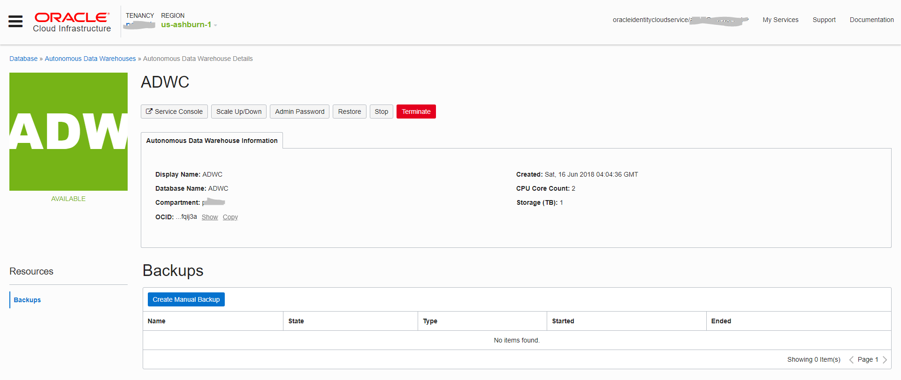
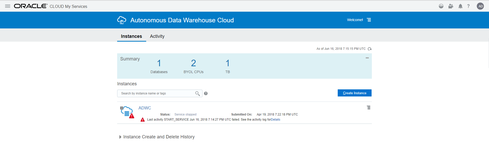

This was first published on https://www.dbi-services.com/blog/adwc-new-oci-interface/ (2018-06-17)
Republishing here for new followers. The content is related to the versions available at the publication date.
. 
A few things have changed about the Autonomous Data Warehouse Cloud service recently. And I’ve found the communication not so clear, so here is a short post about what I had to do to start the service again. The service has always been on the OCI data centers but was managed with the classic management interface. It has been recently migrated to the new interface:
Note that ADWC here is the name I’ve given for my service. It seems that the Autonomous Data Warehouse Cloud Service is now referred by the ADW acronym.
The service itself did not have any outage. The migration concerns only the interface. However, once the migration done, you cannot use the old interface. I went to the old interface with the URL I bookmarked, tried to start the service, and got a ‘last activity START_SERVICE failed’ error message without additional detail. 
You can forget the old bookmark (such as https://psm-tenant.console.oraclecloud.com/psmui/faces/paasRunner.jspx?serviceType=ADWC) and you now have to use the new one (such as https://console.us-ashburn-1.oraclecloud.com/a/db/adws/ocid1.autonomousdwdatabase.oc1.iad.al-long-IAD-identifier)
So I logged to the console https://console.us-ashburn-1.oraclecloud.com (My service is in Ashburn-1 region). There I provided the tenant name (was the cloud account in the old interface) which can also be provided in the URL as https://console.us-ashburn-1.oraclecloud.com/?tenant=tenant. I selected oracleidentitycloudservice as the ‘identity provider’, my username and password and I am on the OCI console.
From the top-left menu, I can go to Autonomous Data Warehouse. I see nothing until I choose the compartement in the ‘list scope’. The ADWC service I had created when in the old interface is in the ‘tenant (root)’ compartment. Here I can start the service.
The previous PSM command line interface cannot be used anymore. We need to install the OCI CLI:
$ bash -c "$(curl -L https://raw.githubusercontent.com/oracle/oci-cli/master/scripts/install/install.sh)"
You will need the Tenancy ID (Tenancy OCID:ocid1.tenancy.oc1..aaaaaaaa… that you find on the bottom of each page in the console), the User ID (User OCID ocid1.user.oc1..aaaaaaa… that you find in the ‘users’ menu). All those ‘OCID’ are documented in https://docs.us-phoenix-1.oraclecloud.com/Content/API/Concepts/apisigningkey.htm
If you used the REST API, they change completely. You will have to post to something like:
/20160918/autonomousDataWarehouses/ocid1.autonomousdwdatabase.oc1.iad.abuwcljrb.../actions/start
where the OCID is the database one that cou can copy from the console.
{kind=link}
{kind=link}